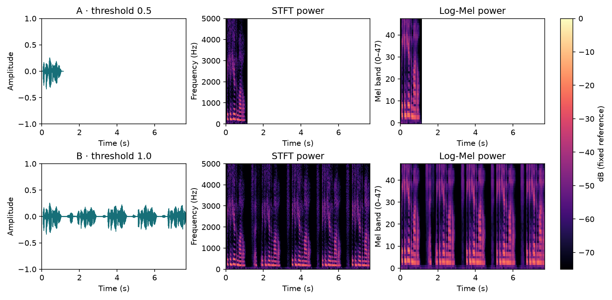
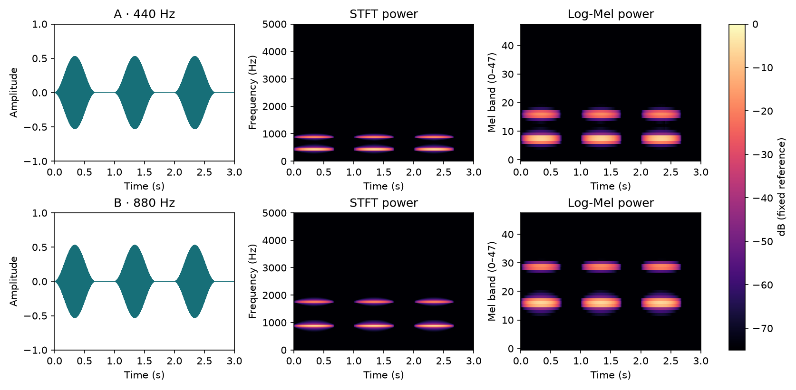
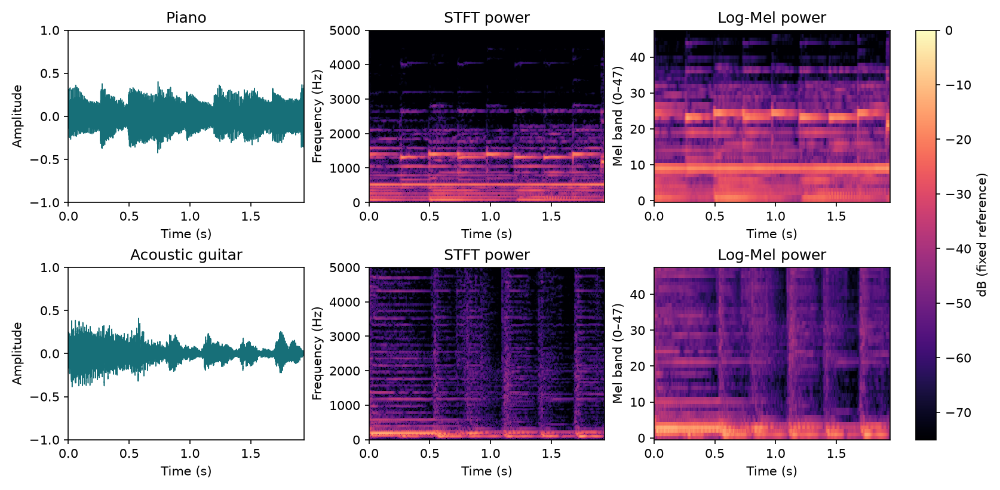

축제 사운드 실험실
Colab 연결 전에 먼저 듣습니다. A와 B를 비교하고, 들은 차이를 그림에서 찾으세요. 재생 버튼을 누를 때만 소리가 납니다.
첫 청취 · 어느 안내 음성에 반복이 있나요?
같은 음원의 파형과 스펙트로그램 보기

직접 합성 · 기본 주파수만 두 배
같은 음원의 파형과 스펙트로그램 보기

MusicGen 사전 생성 · 악기 조건만 변경
같은 음원의 파형과 스펙트로그램 보기
